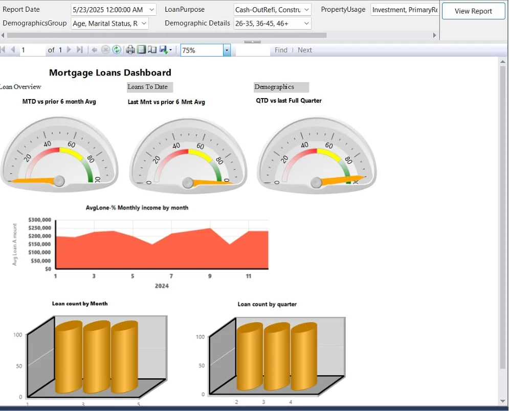
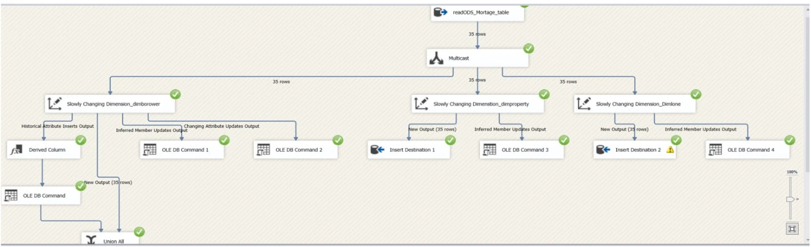

Projects / Mortgage loan analytics
Mortgage loan analytics: warehouse, ETL and reports
A SQL Server data warehouse for mortgage loans, loaded with SSIS and reported through SSRS and Power BI.


The question
Anyone reviewing a loan book asks the same things: how many loans, how large, to which borrowers, and how this month compares with recent months. This project set out to help users understand loan volume, borrower demographics, loan amounts and overall loan performance.
What it delivers
- A data warehouse that holds loan, borrower, property and financial data in one place.
- An SSIS load that keeps the borrower, property and loan dimensions current.
- Reports in SSRS and Power BI on volume, amounts, demographics and performance.
Data and tools
The source is a mortgage table in an operational data store (ODS) with loan, borrower, property and financial fields. The SSIS run shown on this page processed 35 rows.
SQL Server holds the warehouse, SSIS does the load, SSRS produces the paginated report, and Power BI covers interactive dashboards. The tables follow a dimensional model with surrogate keys, and separate dimensions for borrower, property and loan.
How the dimension load works
Every source row goes through a Multicast to three Slowly Changing Dimension steps. Select any box below to see what it does.
Tip. Select or focus a box to read about it. On a phone, swipe the diagram sideways.
Only the borrower dimension keeps history (Type 2) and overwrites changing attributes (Type 1). Property and loan load new members and fix inferred members.
The original package screenshot is under the SSIS package tab at the top of this page.
Challenge and solution
This project had more technical challenges.
Challenge. Building a reliable mortgage data warehouse while handling ETL errors, surrogate-key relationships, and historical changes in borrower, property, and loan data.
Solution. Developed an SSIS ETL pipeline with Slowly Changing Dimensions, loaded the dimensional warehouse, and connected the resulting data model to SSRS and Power BI reports.
The SSRS report
The Mortgage Loans Dashboard is built around three questions: how is the current period doing, how are amounts trending, and how many loans are there.
- Five parameters set the view: report date, loan purpose (for example cash-out refinance or construction), property usage (for example investment or primary residence), demographics group (for example age or marital status) and demographic details (for example age bands 26 to 35, 36 to 45 and 46 and over).
- Three gauges compare month to date with the prior six-month average, last month with the prior six-month average, and quarter to date with the last full quarter.
- An area chart tracks average loan amount by month for 2024.
- Two bar charts show loan count by month and by quarter.
- The page is split into three areas: Loan Overview, Loans To Date and Demographics.
Potential benefits
These are potential benefits of the design. They are not measured results.
- One warehouse to answer volume and amount questions, instead of separate extracts.
- Baseline gauges show at a glance whether the current period is above or below its recent average.
- Demographic parameters let one report serve different audiences.